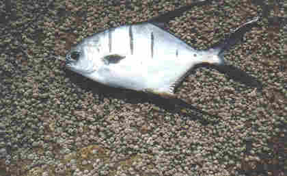

.png)
Praia do Campeche
Introdução
A praia do Campeche, localizada no sul da Ilha de Santa Catarina em Florianópolis, é a maior em extensão da região, com aproximadamente 3,5km. Tecnicamente, poderia ser considerada uma continuação da praia da Joaquina, visto que não há uma fronteira ou divisão entre ambas as praias, porém culturalmente as duas são separadas, sendo a Joaquina mais próxima das dunas e a praia do Campeche mais próxima do bairro. Essa praia é muito conhecida por suas águas cristalinas, suas fortes ondas e águas geladas, oque atrai surfistas e banhistas de diversos lugares diferentes, especialmente no verão. Além de sua beleza natural, a praia oferece uma vista deslumbrante e oportunidade de visita da Ilha do Campeche, conhecida por sua rica biodiversidade e sítios arqueológicos, tornando-se um destino ideal para quem busca tranquilidade, contato com uma natureza exuberante e aventura. Além do mais os visitantes podem explorar diversas trilhas ecológicas que levam a mirantes com vistas incríveis ou até a prática de esportes aquáticos, como surf e stand up paddle, oque é bem popular entre os turistas.
Espécies
Pampo-Galhudo
http://www.pescacommosca.com.br/pampog.htm
Trachinotus goodei (conhecido também como Pampo-galhudo, pâmpano e pampo-riscado), peixe comumente encontrado em águas costeiras rasas, canais ou buracos, recifes, praias arenosas ou fundos lamacentos. Tem como principal hábito nadar de maneira livre as vezes sozinho, porém também em pequenos cardumes.
Marimbás

https://paginasdabio.ufpr.br/marimba/
Os Diplodus argenteus, chamados popularmente por marimbás são conhecidos por serem altamente sociais e formarem cardumes que podem consistir de dezenas a centenas de indivíduos nadando juntos em movimentos coordenados, proporcionando-lhes segurança em número e aumentando suas chances de encontrar comida e evitar predadores. Esse peixe pode ser encontrado em todo o litoral brasileiro e da América Central, tanto em águas rasas, como no fundo próximo à corais, rochas e tocas. É uma espécie onívora, o que significa que tem uma dieta variada. Eles se alimentam principalmente de pequenos invertebrados como crustáceos e moluscos encontrados no fundo do mar, bem como algas e outros materiais vegetais. Seu comportamento alimentar envolve a busca de comida perto do substrato e a busca de pequenas presas entre rochas e recifes de coral.
Carapicus
https://paginasdabio.ufpr.br/carapicu/
Os Eucinostomus gula, popularmente chamados de carapicus como muitas espécies de peixes, possuem cromatóforos (células especializadas que permitem ajustar a sua coloração) , oque permite mudarem a intensidade de seus padrões de cores, os machos podem exibir cores vibrantes para atrair fêmes, podem alterar também sua coloração em resposta a ameaças ou para se misturar com o ambiente, fornecendo-lhes camuflagem contra predadores ou presas. Os carapicus são comumente encontrados nas águas costeiras do Oceano Atlântico ocidental, desde a Flórida até o Brasil, habitando águas rasas, incluindo estuários, baías e fundos arenosos ou lamacentos. Animais onívoros, eles se alimentam de pequenos invertebrados, plâncton e detritos.
Anchova

https://www.oceaninspiration.net/anchova/
A espécie Pomatomus saltatrix, mais conhecido como anchova é um peixe de corpo alongado, cor cinza-azulada, cabeça grande e mandíbula saliente. São encontrados em todo o litoral do Brasil, mais comum do Rio de Janeiro até Santa Catarina. Nada isoladamente ou em grandes cardumes (principalmente quando jovem). Difundia-se a ideia de que a anchova é um peixe de Inverno. Na verdade, embora os cardumes se aproximem mais da costa durante os meses mais frios, a anchova pode ser encontrada em quantidade e tamanho durante todo o ano. A anchova é um predador e sua alimentação é constituída basicamente de peixes menores, crustáceos e moluscos.
Papa-terra

https://www.borapescar.com/blogs/betara/
Menticirrhus americanos (conhecido também como Papa-Terra ou Betara), peixe comumente encontrado em canais formados nas costas marítimas, geralmente em locais mais fundos, por isso se encaixam como peixes demersais, porém possuem temporadas em que o Papa-Terra se encontra mais perto da beira do mar, geralmente acontecendo isto no verão. Carne muito saboroso de acordo com os amantes de peixes, tem como principal hábito ser um predador, se alimentando de vários tipos de alimentos como pequenos crustáceos, moluscos, camarões, pequenos peixes, entre outros;
Robalo

https://www.ruraltectv.com.br/como-criar-robalo/
Centrpomus parallelus (conhecido também como robalo), peixe comumente encontrado em costas, porém para conseguir se alimentar o famoso robalo ocupa estuários e rios. Tem como principal hábito ser um peixe solitário além de ser um predador, que se alimenta principalmente de alimentos como crustáceos, moluscos, camarões e pequenos peixes;
Cação
https://www.centralfishes.com.br/portfolio-view/peixe-cacao/
O peixe cação é um pequeno tubarão medindo 1,3 m de comprimento, O formato do corpo é alongado; o focinho pontudo; a nadadeira caudal apresenta o lobo superior maior que o inferior. A coloração é cinza claro ou cinza chumbo, clareando em direção ao ventre. Ele é encontrado em prateleiras continentais e insulares, principalmente em fundos de areia, conchas e corais. Vivípara (com uma placenta saco vitelino), com 3 a 6 jovens por ninhada. Utilizado salgados secos para consumo humano. Peixes pelágicos, que se movimentam constantemente ao longo das praias e parcéis. A captura é mais fácil durante o verão, quando se aproximam da costa para reproduzir. Sua alimentação é carnívora, que se alimentam de peixes, crustáceos, moluscos, aves e mamíferos marinhos.
Tainha

https://engeplus.com.br/noticia/economia/2016/epagri-pesquisa-criacao-de-tainhas-em-agua-doce
Mugilidae (conhecido também como tainha), peixe comumente encontrado em águas costeiras e estua-rinas, geralmente em locais rasos em cardumes perto das superfícies. Tem como principal característica ser um grande ativo comercial de várias regiões, como por exemplo Florianópolis, além de ter como ter comportamento migratório sempre se movendo para águas mais quentes durante o período do inverno e retornando ao seu local de reprodução no verão, configurando assim a famosa safra da tainha;
Balneabilidade
A Praia do Campeche, um dos destinos mais populares de Florianópolis, atrai moradores e turistas durante o ano todo. A qualidade da água é um fator crucial para a experiência de quem visita suas areias douradas e águas cristalinas. A balneabilidade da Praia do Campeche varia ao longo do ano e é monitorada regularmente pela FLORAM e pela FATMA. Em 21/05/2024, os trechos foram avaliados como próprios para banho com as seguintes concentrações de coliformes fecais: 216 nmp/100ml, 85 nmp/100ml, 31 nmp/100ml, 10 nmp/100ml e 10 nmp/100ml. Entretanto, em datas como 25/03/2024 e 18/03/2024, um dos trechos apresentou níveis muito altos de E. coli, tornando-o impróprio para banho. A média geral foi de 70,4 nmp/100ml, uma média razoável considerada própria para banho.